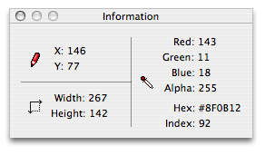

Using the info panel

The info panel can provide some extremely useful realtime information while you work.
- The upper-left area of the panel provides the x and y values of your cursor relative to the upper-left corner of the active document.
- As you draw, this area also displays the current position of your cursor relative to where you initially clicked.
- The lower left area provides the width and height of the active document.
- The right side of the panel gives detailed information about the color under your cursor in the active document.
- The first four lines make up the RGBA value of the color.
- The hex value is suitable for use in HTML or CSS.
- The index line gives the index of that color in the document's palette, if it's present.
See also
The index field in the info panel shows "--" on colors in my palette
Using the eyedropper